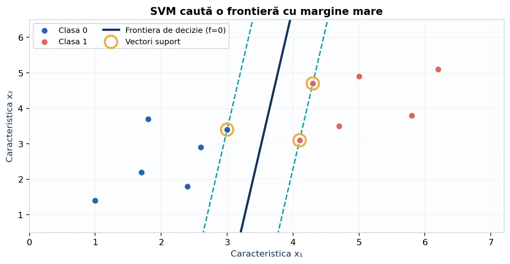
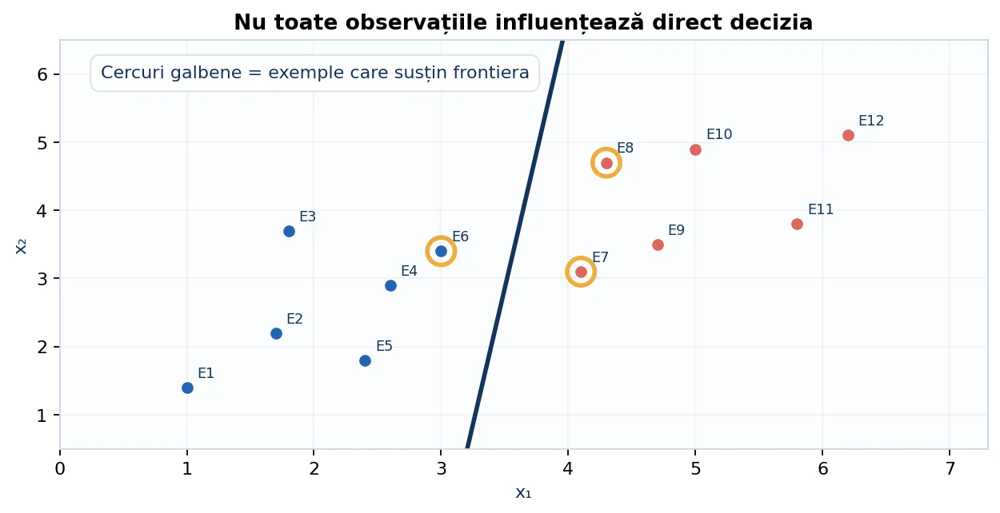
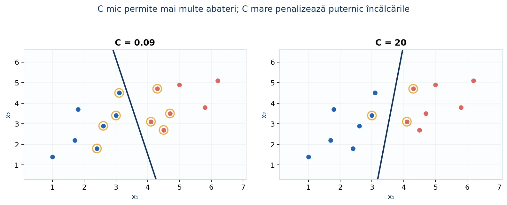
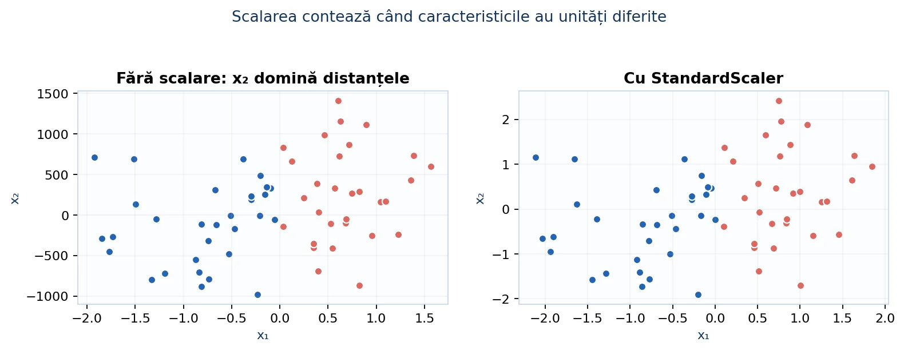
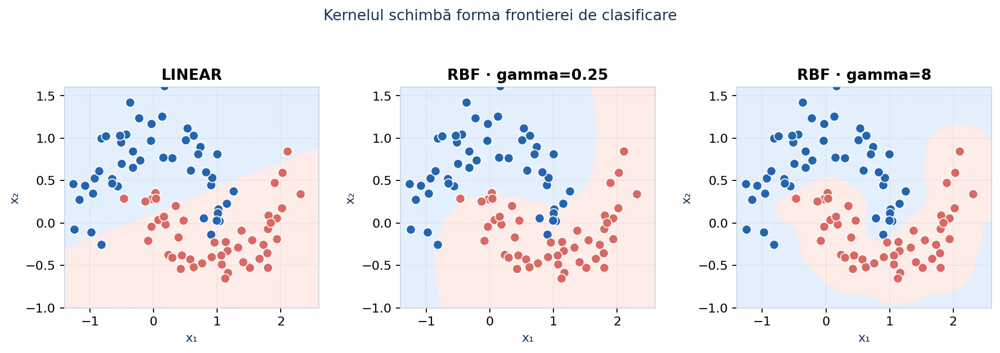
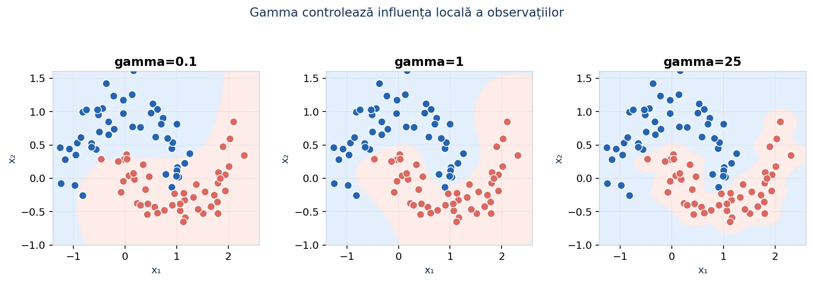
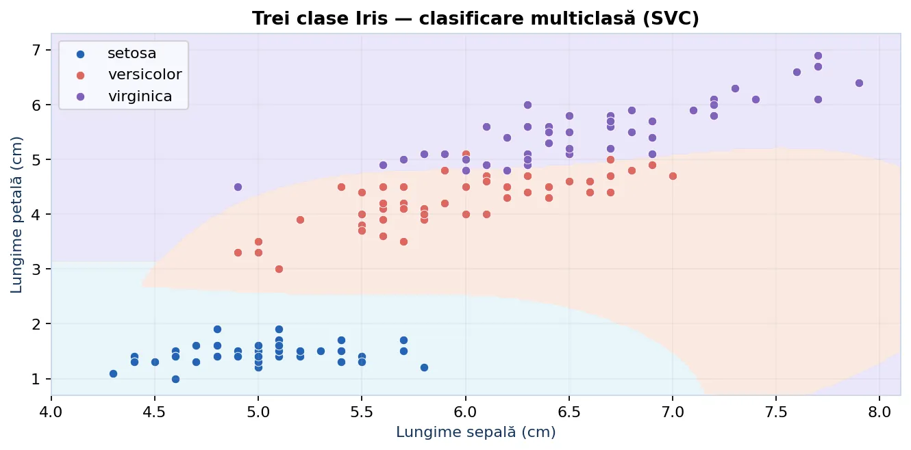
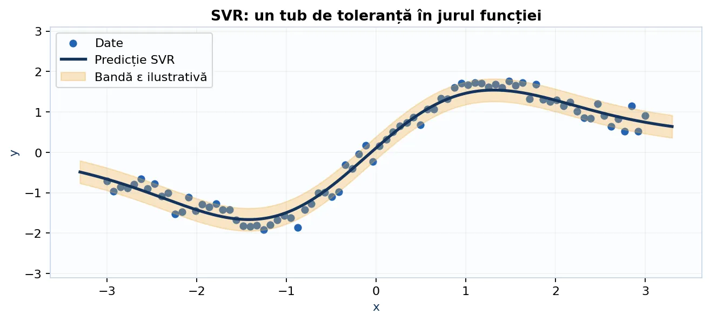

De la ecuația unei drepte la clasificatoare cu margine maximă, kerneluri și probleme multiclasă. Învățăm geometria din spatele formulelor, apoi lucrăm cu exemple Python și scikit-learn.
Mașinile cu vectori suport (Support Vector Machines) sunt metode de învățare supervizată. Pentru fiecare exemplu de antrenare avem caracteristici și o etichetă corectă. SVM învață o regulă prin care poate clasifica observații noi. Spre deosebire de regresia liniară, care prezice o valoare numerică, SVC prezice o clasă.
Exemple: clasificarea unui mesaj ca spam sau legitim, recunoașterea unei categorii de flori după măsurători, recunoașterea unei cifre scrise de mână sau distingerea a două clase de sunete pe baza descriptorilor extrași. Familia SVM include și SVR, o variantă pentru regresie.
În geometria din liceu, o dreaptă poate fi descrisă prin ecuația ax + by + c = 0. Pentru o observație cu două caracteristici (x₁, x₂), calculăm un scor; semnul lui spune de care parte a dreptei se află punctul.
Într-un spațiu cu trei caracteristici, frontiera este un plan. Pentru mai multe caracteristici se numește hiperplan. Nu trebuie să-l desenăm în zece dimensiuni: regula de calcul rămâne o sumă ponderată.

Dacă mai multe drepte clasifică perfect exemplele cunoscute, toate obțin aceeași acuratețe pe antrenare. Totuși, una poate trece la câțiva milimetri de observațiile dintr-o clasă: o perturbare mică poate schimba predicția. Alta poate trece prin mijlocul spațiului liber dintre clase.
SVM urmărește marginea: distanța până la cele mai apropiate puncte din fiecare clasă. Când aceasta este mare, frontiera este mai tolerantă la mici variații ale observațiilor, deși acest lucru nu garantează performanța pe orice date necunoscute.
Punctele aflate chiar pe margine sau în interiorul acesteia sunt cele care constrâng alegerea frontierei. Le numim vectori suport. Alte puncte, departe de margine, pot fi mutate puțin fără ca frontiera optimă să se schimbe.

În scikit-learn, după antrenarea unui SVC, atributul support_vectors_ conține coordonatele vectorilor suport, iar support_ conține indicii acestora în setul de antrenare.
Pentru etichete codificate prin −1 și +1, vrem ca observațiile să fie nu doar corect clasificate, ci și situate la o distanță suficientă de frontieră. Alegem o scală astfel încât exemplele de pe margine să aibă scorul +1 sau −1.
Distanța dintre cele două linii ale marginii este 2/‖w‖. A o maximiza echivalează cu a minimiza ‖w‖²/2.
Datele reale conțin măsurători imperfecte, puncte etichetate greșit și observații din clase diferite care se suprapun. În aceste condiții, o separare perfectă poate să nu existe sau să generalizeze slab. Soft margin permite încălcări ale marginii, dar le penalizează.
Variabila ξᵢ măsoară cât de mult încalcă exemplul i marginea. Parametrul C stabilește cât de costisitoare sunt aceste încălcări: C mare le penalizează mai puternic, C mic permite un compromis cu o frontieră mai simplă.

SVC, C mare înseamnă regularizare mai slabă, iar C mic regularizare mai puternică; este invers față de interpretarea lui alpha pentru Ridge.O clasificare corectă, dar foarte aproape de frontieră, nu este echivalentă cu una făcută cu margine mare. Hinge loss penalizează atât clasificările greșite, cât și predicțiile corecte aflate în interiorul marginii.
| y | Scor f(x) | y·f(x) | Hinge loss |
|---|---|---|---|
| +1 | 2 | 2 | 0 |
| +1 | 0,4 | 0,4 | 0,6 |
| −1 | 0,5 | −0,5 | 1,5 |
| −1 | −2 | 2 | 0 |
Pentru primul exemplu din tabel avem decizie corectă și margine respectată; pentru ultimul, la fel. Al treilea exemplu este clasificat greșit.
def hinge_loss(y, scor): return max(0.0, 1.0 - y * scor) for y, scor in [(1, 2), (1, .4), (-1, .5), (-1, -2)]: print(hinge_loss(y, scor))
0.0 0.6 1.5 0.0
Să presupunem că avem două caracteristici: x₁ este o măsură a intensității, x₂ o măsură a frecvenței, iar modelul a învățat w₁=2, w₂=−1, b=−3.
Dacă schimbăm observația în x=(1,3), obținem f(x)=−4 și prezicem clasa −1. Magnitudinea scorului măsoară încrederea geometrică într-un sens relativ, dar nu este o probabilitate.
def prezice_svm_liniar(x, w, b): scor = b for i in range(len(w)): scor += w[i] * x[i] return 1 if scor >= 0 else -1 print(prezice_svm_liniar([3, 1], [2, -1], -3)) print(prezice_svm_liniar([1, 3], [2, -1], -3))
1 -1
Pentru a înțelege principiul învățării, putem implementa o versiune didactică prin gradient subordonat (subgradient) al funcției hinge cu regularizare L2. Nu este același optimizator performant folosit de sklearn.svm.SVC, dar arată clar cum parametrii sunt actualizați.
La fiecare exemplu calculăm margine = y·(w·x+b). Dacă marginea este îndeplinită, regularizarea micșorează ușor coeficienții. Dacă nu este, adăugăm și o corecție care împinge exemplul către partea corectă a frontierei.
def antreneaza_svm_liniar(X, y, epoci=400, pas=0.01, C=2.0): n = len(X) d = len(X[0]) w = [0.0] * d b = 0.0 for _ in range(epoci): dw = w.copy() # derivata pentru 0.5 * ||w||^2 db = 0.0 for x, eticheta in zip(X, y): scor = sum(w[j] * x[j] for j in range(d)) + b if eticheta * scor < 1: for j in range(d): dw[j] -= (C / n) * eticheta * x[j] db -= (C / n) * eticheta for j in range(d): w[j] -= pas * dw[j] b -= pas * db return w, b X = [[-2, -1], [-1, -2], [1, 2], [2, 1]] y = [-1, -1, 1, 1] w, b = antreneaza_svm_liniar(X, y) print([1 if sum(w[j] * x[j] for j in range(2)) + b >= 0 else -1 for x in X])
[-1, -1, 1, 1]
Imaginați-vă că un model primește vârsta (15–18 ani) și numărul de caractere dintr-un document (0–50 000). Valorile mari pot domina geometria, chiar dacă nu sunt mai relevante. Pentru SVM, scalarea este deosebit de importantă deoarece distanțele și produsele scalare stau la baza metodei.

from sklearn.pipeline import make_pipeline from sklearn.preprocessing import StandardScaler from sklearn.svm import SVC model = make_pipeline(StandardScaler(), SVC(kernel="linear", C=1.0)) model.fit([[16, 1000], [17, 3000], [15, 900], [18, 3800]], [0, 1, 0, 1]) print(model.predict([[16, 2800]]))
[1]
Pipeline asigură acest comportament și în validarea încrucișată, prevenind data leakage.În unele probleme, exemplele din aceeași clasă formează două semicercuri, un cerc interior și unul exterior sau o regiune curbă. Orice dreaptă lasă puncte pe partea greșită. Soluția este să folosim caracteristici noi sau un kernel.
Exemplu: punctele din interiorul unui cerc satisfac aproximativ x₁²+x₂²<r². Dacă adăugăm caracteristica z=x₁²+x₂², un prag pe z poate separa interiorul de exterior. SVM cu kernel generalizează această idee fără să construim explicit toate caracteristicile.

Un kernel este o funcție care compară două observații. Pentru multe familii de kerneluri, valoarea lui este echivalentă cu produsul scalar dintre reprezentări transformate ale observațiilor, dar fără să calculăm explicit acele reprezentări.
SVM lucrează cu valori ale kernelului dintre exemplele de antrenare. Așa poate obține frontiere neliniare în spațiul original al datelor. Nu orice funcție de similaritate este un kernel valid pentru SVM; există cerințe matematice pentru matricea kernelului.
| Kernel | Formulă | Când să îl încerci |
|---|---|---|
| Linear | K(x,z)=xᵀz | Caracteristici numeroase, relație aproximativ liniară |
| Poly | K(x,z)=(γxᵀz+r)d | Interacțiuni de grad redus între caracteristici |
| RBF | K(x,z)=exp(−γ‖x−z‖²) | Frontieră flexibilă, neliniară |
Kernelul linear este un punct de plecare ușor de interpretat; rbf este o alegere generală pentru relații neliniare; poly este util când interacțiunile polinomiale sunt plauzibile. Parametrul degree contează numai pentru kernelul polinomial.
from sklearn.svm import SVC from sklearn.pipeline import make_pipeline from sklearn.preprocessing import StandardScaler model_liniar = make_pipeline(StandardScaler(), SVC(kernel="linear", C=1)) model_rbf = make_pipeline(StandardScaler(), SVC(kernel="rbf", C=2, gamma="scale")) model_poly = make_pipeline(StandardScaler(), SVC(kernel="poly", degree=2, C=1))
Pentru RBF, γ controlează cât de repede scade similaritatea când două puncte se îndepărtează. Dacă γ este mic, observațiile influențează regiuni mari și frontiera este de obicei mai netedă. Dacă γ este mare, influența este foarte locală și frontiera poate deveni neregulată.

gamma="scale" este o valoare implicită utilă, dar nu garantează optimumul. Atât C, cât și gamma se aleg prin validare pe datele de antrenare.Construim un set de antrenare și unul de test, standardizăm doar pe antrenare prin pipeline, antrenăm modelul și evaluăm predicțiile pe exemple nefolosite la fit.
from sklearn.datasets import make_moons from sklearn.model_selection import train_test_split from sklearn.pipeline import make_pipeline from sklearn.preprocessing import StandardScaler from sklearn.svm import SVC from sklearn.metrics import accuracy_score, classification_report X, y = make_moons(n_samples=300, noise=0.20, random_state=42) X_train, X_test, y_train, y_test = train_test_split( X, y, test_size=0.25, stratify=y, random_state=42 ) model = make_pipeline( StandardScaler(), SVC(kernel="rbf", C=2.0, gamma="scale") ) model.fit(X_train, y_train) y_pred = model.predict(X_test) print("Accuracy:", round(accuracy_score(y_test, y_pred), 3)) print(classification_report(y_test, y_pred))
Explicație: test_size=0.25 păstrează un sfert din date pentru evaluare; stratify=y menține proporțiile claselor; random_state=42 permite repetarea împărțirii; StandardScaler este recalculat corect în pipeline la antrenare.
Pentru un SVC antrenat, putem afla câte observații se află în mulțimea vectorilor suport. Dacă am folosit pipeline, estimatorul este ultimul pas. Scorurile decision_function nu trebuie confundate cu probabilitățile.
from sklearn.datasets import load_iris from sklearn.svm import SVC X, y = load_iris(return_X_y=True) model = SVC(kernel="linear", C=1.0) model.fit(X, y) print("Clase:", model.classes_) print("Vectori suport pe clase:", model.n_support_) print("Total:", len(model.support_)) print("Predicție:", model.predict([X[0]]))
kernel="linear", există și coeficienți coef_. Pentru rbf, separarea nu se exprimă în general printr-un singur vector de coeficienți în spațiul original.SVM a fost introdus pentru a separa două clase. În probleme precum Iris (trei specii) sau recunoașterea cifrelor (zece clase), folosim mai multe clasificatoare binare și combinăm deciziile. Două strategii obișnuite sunt one-vs-rest și one-vs-one.
| Strategie | Ce antrenăm | Număr modele pentru K clase |
|---|---|---|
| One-vs-rest (OvR) | clasa i versus toate celelalte | K |
| One-vs-one (OvO) | fiecare pereche de clase | K(K−1)/2 |
La K=3 avem trei perechi: (A,B), (A,C) și (B,C). La K=4 avem șase perechi. Fiecare model OvO compară numai exemplele din cele două clase din pereche, apoi voturile sau scorurile sunt combinate.

SVC construiește intern clasificatoare one-vs-one. Parametrul decision_function_shape="ovr" modifică forma scorurilor returnate, nu algoritmul intern de antrenare. În schimb, LinearSVC folosește implicit one-vs-rest, ceea ce poate fi mai eficient pe date cu multe exemple și caracteristici.
from sklearn.datasets import load_iris from sklearn.pipeline import make_pipeline from sklearn.preprocessing import StandardScaler from sklearn.svm import SVC, LinearSVC X, y = load_iris(return_X_y=True) model_ovo = make_pipeline(StandardScaler(), SVC(kernel="rbf")) model_ovr = make_pipeline(StandardScaler(), LinearSVC(max_iter=10000)) model_ovo.fit(X, y) model_ovr.fit(X, y) print("SVC:", model_ovo.predict([X[0]])) print("LinearSVC:", model_ovr.predict([X[0]]))
SVC(decision_function_shape="ovo") poate returna 3 scoruri (câte unul pentru fiecare pereche), iar "ovr" returnează 3 scoruri transformate, câte unul pe clasă.Putem forța strategia OvR și cu un SVC kernelizat folosind un wrapper din scikit-learn. Fiecare estimator răspunde la întrebarea „este această clasă sau nu?”; pentru un exemplu nou se compară scorurile modelelor.
from sklearn.datasets import load_iris from sklearn.multiclass import OneVsRestClassifier from sklearn.pipeline import make_pipeline from sklearn.preprocessing import StandardScaler from sklearn.svm import SVC X, y = load_iris(return_X_y=True) model = make_pipeline( StandardScaler(), OneVsRestClassifier(SVC(kernel="rbf", C=2.0)) ) model.fit(X, y) print(model.predict([X[0], X[70], X[140]]))
[0 1 2]
Pentru un set cu zece clase, OvO antrenează 45 de clasificatoare binare, în timp ce OvR antrenează 10. Totuși, costul total nu poate fi dedus doar din numărul lor, pentru că modelele OvO lucrează pe subseturi mai mici de date.
| Parametru | Rol practic |
|---|---|
C | compromis între margine și încălcări; mic = regularizare mai puternică |
kernel | linear, rbf, poly, sigmoid |
gamma | lărgimea influenței pentru rbf, poly, sigmoid |
degree | gradul kernelului polinomial |
class_weight | ponderi diferite pentru clase; balanced la dezechilibru |
decision_function_shape | forma scorurilor pentru mai multe clase: ovr/ovo |
tol | toleranța optimizatorului |
max_iter | limită de iterații (−1 implicit: fără limită explicită) |
În versiuni recente ale scikit-learn, parametrul probability a fost marcat pentru depreciere; pentru probabilități calibrate pe versiuni noi preferăm CalibratedClassifierCV. SVC oferă în mod natural decision_function (scoruri), nu probabilități calibrate.
GridSearchCV pe svc__C și svc__gamma după ce ai construit un Pipeline.În context competițional, scorul public este calculat pe o parte a datelor necunoscute; scorul final poate fi calculat pe alte exemple. Dacă adaptăm zeci de configurații strict după scorul public, riscăm să ne potrivim din întâmplare pe acea submulțime. Folosim cross-validation internă și lăsăm setul de test pentru evaluarea finală.
from sklearn.datasets import make_moons from sklearn.model_selection import GridSearchCV, train_test_split from sklearn.pipeline import Pipeline from sklearn.preprocessing import StandardScaler from sklearn.svm import SVC X, y = make_moons(n_samples=240, noise=.18, random_state=21) X_tr, X_te, y_tr, y_te = train_test_split( X, y, test_size=.25, stratify=y, random_state=21 ) pipe = Pipeline([ ("scaler", StandardScaler()), ("svc", SVC(kernel="rbf")) ]) cautare = GridSearchCV( pipe, {"svc__C": [0.1, 1, 10], "svc__gamma": [0.01, .1, 1]}, cv=5, scoring="f1", n_jobs=-1 ) cautare.fit(X_tr, y_tr) print("Parametri:", cautare.best_params_) print("Scor pe test:", round(cautare.score(X_te, y_te), 3))
Modelul este selectat prin scorul mediu pe cele cinci folduri de antrenare. Nu recalculăm StandardScaler din afara pipelineului: ar introduce scurgeri de informație între folduri.
Dacă 95% din mesaje sunt legitime și modelul prezice mereu „legitim”, obține 95% accuracy, fără să descopere vreun spam. Pentru clase dezechilibrate putem folosi precision, recall, F1, balanced accuracy și PR-AUC. Pentru mai multe clase folosim macro-F1 sau weighted-F1, în funcție de cerința competiției.
| Metrică | Ce măsoară |
|---|---|
| Accuracy | proporția totală de predicții corecte |
| Precision | din exemplele prezise pozitive, câte sunt corecte |
| Recall | din exemplele cu adevărat pozitive, câte identificăm |
| F1 | media armonică dintre precision și recall |
| Macro-F1 | media F1 pe clase, fiecare cu pondere egală |
from sklearn.metrics import confusion_matrix, classification_report from sklearn.svm import SVC X = [[-2], [-1], [-.5], [.5], [1], [2]] y = [0, 0, 0, 1, 1, 1] model = SVC(kernel="linear").fit(X, y) pred = model.predict([[-1.4], [.8], [1.6]]) print(pred) print(confusion_matrix([0, 1, 1], pred)) print(classification_report([0, 1, 1], pred, zero_division=0))
Când exemplele pozitive sunt rare, multe greșeli pe clasa minoritară pot fi tolerate de un obiectiv nemodificat. Parametrul class_weight="balanced" ajustează penalizarea astfel încât clasele mai puțin reprezentate să aibă o influență mai mare. Nu garantează cel mai bun scor și trebuie evaluat cu metrica potrivită.
from sklearn.pipeline import make_pipeline from sklearn.preprocessing import StandardScaler from sklearn.svm import SVC model = make_pipeline( StandardScaler(), SVC(kernel="rbf", C=2, class_weight="balanced") ) # model.fit(X_train, y_train) # datele tale etichetate
OneHotEncoder). SVC nu poate primi direct șiruri de caractere drept caracteristici numerice.SVM nu „înțelege” direct etichete precum roșu, albastru, verde. Trebuie să transformăm categoriile nominale în variabile numerice fără să introducem o ordine fictivă. Pentru texte se folosesc frecvent reprezentări sparse precum TF-IDF și apoi un model liniar.
from sklearn.compose import ColumnTransformer from sklearn.preprocessing import OneHotEncoder, StandardScaler from sklearn.pipeline import Pipeline from sklearn.svm import SVC import pandas as pd X = pd.DataFrame({ "lungime": [2.1, 3.8, 2.4, 4.1], "culoare": ["rosu", "albastru", "rosu", "verde"] }) y = [0, 1, 0, 1] prep = ColumnTransformer([ ("num", StandardScaler(), ["lungime"]), ("cat", OneHotEncoder(handle_unknown="ignore"), ["culoare"]) ]) model = Pipeline([("preprocesare", prep), ("svc", SVC(kernel="linear"))]) model.fit(X, y) print(model.predict(pd.DataFrame({"lungime": [3.0], "culoare": ["verde"]})))
LinearSVC este adesea o alegere practică. Datele TF-IDF sunt deja numerice și foarte sparse.Deși SVM este cunoscut mai ales pentru clasificare, există și Support Vector Regression (SVR). Acesta prezice un număr real și folosește o bandă de toleranță de lățime ±ε. Erorile mici, în interiorul benzii, nu sunt penalizate de funcția ε-insensitive.

import numpy as np from sklearn.pipeline import make_pipeline from sklearn.preprocessing import StandardScaler from sklearn.svm import SVR X = np.arange(1, 9).reshape(-1, 1) y = np.array([1.1, 1.8, 3.2, 3.1, 4.7, 5.0, 6.1, 6.8]) model = make_pipeline(StandardScaler(), SVR(kernel="rbf", C=10, epsilon=.2)) model.fit(X, y) print(round(float(model.predict([[4.5]])[0]), 2))
Pentru regresie măsurăm MAE, RMSE și R² pe date de test. Parametrul ε controlează zona în care nu penalizăm deviațiile, iar C determină compromisul dintre regularizare și deviațiile mai mari.
| Estimator | Sarcină | Când are sens |
|---|---|---|
LinearSVC | Clasificare | Multe exemple/feature-uri, frontieră liniară, text TF-IDF |
SVC(kernel="linear") | Clasificare | Seturi mici și medii; nevoie de suport vectorii expliciți |
SVC(kernel="rbf") | Clasificare | Relații neliniare, date nu foarte mari, scalate |
SVR | Regresie | Predicții numerice cu toleranța ε |
Nu există un model universal cel mai bun. Compară și cu regresie logistică, Random Forest sau Gradient Boosting, folosind aceeași schemă de validare.
LinearSVC sau aproximații de kernel.| Situație | Recomandare orientativă |
|---|---|
| Set mic-mediu, caracteristici numerice, structură geometrică | Merită testat SVC și RBF |
| Text cu TF-IDF, multe caracteristici sparse | LinearSVC este un baseline solid |
| Date cu câteva mii de exemple și frontieră neliniară | SVC RBF poate funcționa foarte bine după scalare |
| Sute de mii de exemple, buget mic de timp | Testează mai întâi LinearSVC sau SGDClassifier |
| Necesități puternice de explicație și reguli clare | Un arbore mic ori un model liniar poate fi mai ușor de interpretat |
| Probabilități calibrate esențiale | Calibrează explicit scorurile sau compară cu regresie logistică |
SVM poate funcționa slab dacă selecția caracteristicilor este nepotrivită, setul are foarte mult zgomot, clasele se suprapun, parametrizarea este neinspirată ori nu se scalează datele. O frontieră cu acuratețe mare pe antrenare nu garantează acuratețe mare pe evaluarea finală a olimpiadei.
decision_function cu o probabilitate între 0 și 1.C foarte mare în încercarea de a elimina orice eroare de antrenare.gamma foarte mare pentru o frontieră care memorează zgomotul.decision_function_shape="ovr" schimbă strategia internă de antrenare a SVC.| Întrebare | Răspuns de reținut |
|---|---|
| Ce este un vector suport? | Exemplu din antrenare care contribuie la definirea frontierei |
| Ce maximizează SVM? | Marginea, sub compromis cu penalizările erorilor |
| Ce face C? | Controlul regularizării și al încălcărilor marginii |
| Ce face gamma în RBF? | Controlează cât de local este efectul observațiilor |
| Ce face kernelul? | Permite relații neliniare prin comparații între reprezentări |
| Cum rezolvăm multiclasă? | SVC: OvO intern; LinearSVC: OvR implicit |
| Când folosim SVR? | Când ținta este numerică, nu o clasă |
După ce înțelegi geometria, experimentează în laborator: deplasează un punct, schimbă C și gamma, apoi observă dacă se modifică frontiera și ce exemple devin vectori suport.
scikit-learn · Support Vector Machines (documentație) · SVC. Material ONIA redactat și ilustrat pentru pregătirea liceală.